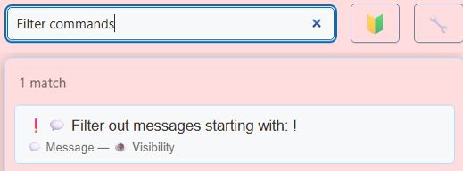

1. Vyberte, kde filtrovat
Otevřete vyskakovací okno SSN nebo desktopové „Zdroje a nastavení“. Přesné níže uvedené popisky najdete vyhledáváním v nabídce.
- Příchozí chat Zachycené zprávy zdrojů
- Globální nastavení Filtrování před rozesláním
- Jednotlivé stránky Každá stránka používá vlastní možnosti URL
| Kde | Účinek |
|---|---|
| Globální nastavení a nástroje → Zpráva – Viditelnost (Global settings and tools → Message - Visibility) | Zahazuje nebo mění zachycené zprávy pro navazující výstupy SSN. Použijte, pokud něco nemá dorazit do žádného výstupu. |
| Možnosti odkazu Streaming Chat Dock | Mění vygenerovanou URL daného doku. Ostatní otevřené doky a překryvy si ponechávají vlastní možnosti. |
| Nativní moderování platformy | Ovládá původní chat platformy. Skrytí někoho uvnitř SSN nepředstavuje nativní zákaz na platformě. |
2. Zablokujte nebo obnovte uživatele
- U zprávy, která je již v doku, klikněte pravým tlačítkem a otevřete Akce uživatele → Blokovat uživatele (User Actions → Block User). Tím se odstraní zprávy daného uživatele a přidá se do seznamu skrytých uživatelů SSN.
- Pro připravený seznam najděte Blokovaní uživatelé v globální části Zpráva – Viditelnost. Zapněte přepínač a zadejte uživatelská jména oddělená čárkami.
- Pro odblokování odeberte uživatelské jméno ze seznamu. Testujte novou zprávou; dříve odstraněné řádky se automaticky nevracejí.
Pokud potřebujete někoho zablokovat nebo dočasně umlčet na zdrojové platformě, použijte její vlastní moderační nástroje. Seznamy viditelnosti a rolí SSN nenahrazují oprávnění platformy.
Chcete-li, aby byly zprávy viditelné poté, co Dock obdrží odstranění, přidejte &showdeleted na adresu URL tohoto Docku. Smazané zprávy zůstanou čitelné s a Smazáno štítek a nevýrazný text. Například: dock.html?session=YOUR_SESSION_ID&showdeleted. Použijte to na svém osobním doku; samostatný dok OBS bez možnosti využívá stávající chování odstraňování smazaných zpráv. Nemůže zobrazit zprávy, které byly zablokovány předtím, než je SSN zachytil.
3. Filtrujte slova a příkazy
Pro globální zpracování vulgarit vyhledejte Censor nebo Block messages that contain swear words. Cenzurování nahrazuje odpovídající text; blokování odstraní celou zprávu. Před testováním vyberte požadované chování.


Pro vlastní seznam frází pouze v doku najděte Obsahuje text nebo jméno v možnostech Streaming Chat Dock. Zapněte, zadejte slovo nebo frázi a vyberte Přidejte. Porovnávání nerozlišuje velikost písmen a kontroluje text zprávy i jméno účastníka chatu. Krátký úryvek může odpovídat části delšího slova. Pokud je zapnutý režim rozmazání, mohou se shody místo odstranění rozmazat.
Zkopírujte aktualizovaný odkaz doku a nahraďte URL všude, kde je daný dok otevřený. Pro zahlcení příkazy dok podporuje &hidecommands. Například:
dock.html?session=YOUR_SESSION_ID&hidecommands&blockedwords=spoiler
Tento příklad mění zobrazení doku. Nevypíná příkazy v systému bodů, pořadníku ani Event Flow.
4. Nastavte boty a důvěryhodné odkazy
V globálním Zpráva – Viditelnost → Přiřadit role/třídy určitým uživatelům (Message - Visibility → Assign roles/classes to certain users), použijte Určit boty podle jména (Identify by name who are bots). Zadejte například moobot:twitch,nightbot:twitch. Přípona platformy omezuje klasifikaci na daný typ zdroje.
Potom vyberte globální skrytí botů, pokud jejich zprávy nepotřebuje žádný výstup, nebo přidejte &hidebots do URL doku pro skrytí pouze tam. Chcete-li nahradit běžné odkazy a povolit odkazy botů, použijte:
dock.html?session=YOUR_SESSION_ID&striplinks&allowbotlinks
Nejprve musí být bot identifikován. Přiřazení role SSN neuděluje oprávnění na Twitch ani jiné platformě. Viz referenční příručku ovládání rolí.
5. Ověřte rozsah
Otevřete jeden nefiltrovaný dok a jeden filtrovaný dok ve stejné relaci. Odešlete smyšlené testovacích zpráv: běžný řádek, blokovanou frázi, příkaz a zprávu bota. Místní filtry mají ovlivnit pouze nastavenou stránku; globální filtry mají ovlivnit navazující výstupy. Ruční a automatický výběr zpráv k zobrazení testujte samostatně.
Pokud mizí příliš mnoho obsahu, vypněte poslední přidaný filtr, zkontrolujte seznam blokovaných uživatelů a režimy panelu nástrojů pouze pro dary/členy/frontu. Staré URL OBS zachovávají staré možnosti. Pro postup s kontrolou zpráv viz Používání doku.